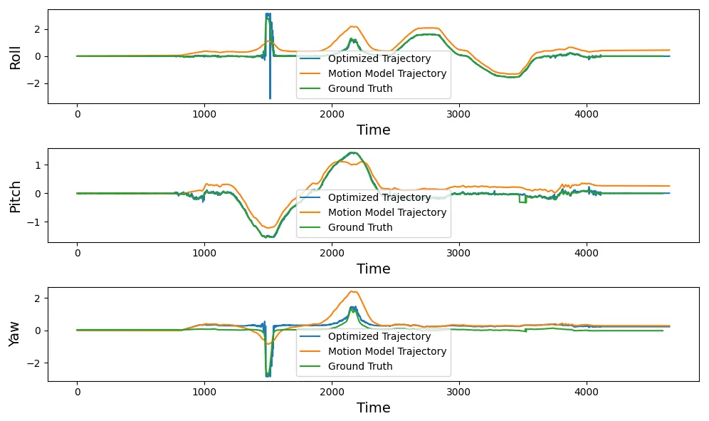

01 / Calibration
Raw counts to physical units.
A rig with an IMU and a camera was rotated by hand, with a motion-capture system recording its true orientation. The IMU reports raw A/D counts, so each axis becomes a physical rate or acceleration as (raw − bias) × Vref / 1023 / sensitivity. The biases come from the first moments of each log, when the rig is still: the gyroscope should read zero and the accelerometer exactly one g, downwards.
Integrating the calibrated gyroscope gives a first orientation trajectory. Comparing it with motion capture showed the calibration was right, and also how the pure motion model slowly drifts away.
02 / Optimisation
Solve for the whole trajectory at once.
Instead of filtering step by step, the whole trajectory of unit quaternions is optimised together. The cost has two equal parts:
- Motion model: each quaternion should agree with the previous one rotated by the gyroscope, measured as the angle of the relative rotation,
‖2 log(qt+1⁻¹ ∘ f(qt, τωt))‖. - Gravity: since the rig only rotates, the accelerometer should see gravity rotated into the body frame by the estimated orientation.
Starting from the motion-model trajectory, gradient descent (learning rate 0.0003) steps all quaternions downhill, then renormalises each to unit length, which keeps every step a valid rotation. It converged in about 100 iterations on every log.
03 / Panorama
Paint every image onto a sphere.
Each 320 × 240 image covers 60° by 45°. Every pixel gets a longitude and latitude on a unit sphere around the camera, is rotated into the world by the orientation at that image’s timestamp, and the sphere is unrolled onto a cylinder to form one panoramic image.
04 / Results
Closer to motion capture than the gyroscope alone.

On several logs the optimised trajectory converged almost exactly onto the motion-capture truth; noisier logs kept small offsets in roll and pitch. The panorama above is stitched from the estimated orientations.